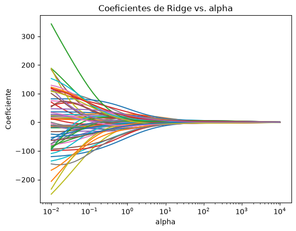
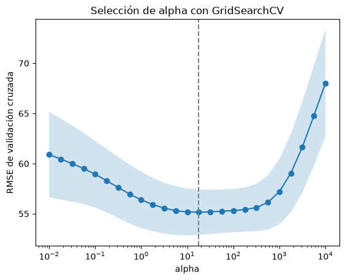

Laboratorio 02: NumPy, pandas, Ridge y validación cruzada
En este laboratorio continuamos con NumPy, pandas y scikit-learn. Verás cuándo una regresión lineal sobreajusta, cómo Ridge lo controla y cómo elegir su hiperparámetro \(\alpha\) con validación cruzada usando GridSearchCV.
Ridge minimiza el error cuadrático más una penalización sobre el tamaño de los coeficientes:
Con \(\alpha = 0\) es una regresión lineal normal. Mientras más grande es \(\alpha\), más pequeños quedan los coeficientes.
Preparación del entorno
Igual que en el laboratorio 01. Hacer antes de la clase, porque se necesita internet para instalar los paquetes. El archivo diabetes.csv debe estar en la misma carpeta que este notebook.
Funciones de NumPy que no vimos en el laboratorio 01 y que usaremos más adelante.
import numpy as np# np.arange(inicio, fin, paso): como range(), pero devuelve un arreglo. El fin NO se incluye.print(np.arange(0, 10, 2))# np.linspace(inicio, fin, n): n valores espaciados uniformemente. El fin SÍ se incluye.print(np.linspace(0, 1, 5))# np.logspace(a, b, n): n valores entre 10**a y 10**b, espaciados en escala logarítmica.# Lo usaremos para probar valores de alpha que van desde muy pequeños hasta muy grandes.alphas = np.logspace(-2, 2, 5)print(alphas) # [0.01, 0.1, 1, 10, 100]
# Una matriz de 4 filas (observaciones) y 3 columnas (características)M = np.array([[1.0, 200.0, 3.0], [2.0, 180.0, 1.0], [3.0, 260.0, 2.0], [4.0, 240.0, 6.0]])# Sin axis, la operación usa todos los elementosprint("Promedio total:", M.mean())# axis=0 recorre las filas: devuelve un resultado por columnaprint("Promedio por columna:", M.mean(axis=0))print("Desv. estándar por columna:", M.std(axis=0))# axis=1 recorre las columnas: devuelve un resultado por filaprint("Promedio por fila:", M.mean(axis=1))
Promedio total: 75.16666666666667
Promedio por columna: [ 2.5 220. 3. ]
Desv. estándar por columna: [ 1.11803399 31.6227766 1.87082869]
Promedio por fila: [68. 61. 88.33333333 83.33333333]
# Broadcasting: al operar M (forma (4, 3)) con un arreglo de forma (3,),# NumPy repite ese arreglo para cada fila de M.media = M.mean(axis=0) # forma (3,)desv = M.std(axis=0) # forma (3,)# Estandarizar: a cada columna le restamos su promedio y la dividimos por su desviación estándar# M es (4, 3), media y desv son (3,), NumPy repite media y desv para cada fila de MM_est = (M - media) / desvprint(M_est.round(2))print("Promedios después:", M_est.mean(axis=0).round(2)) # ~0print("Desviaciones después:", M_est.std(axis=0).round(2)) # 1
# .T es la transpuesta y @ es el producto matricial.# No confundir @ con *, que multiplica elemento a elemento.w = np.array([0.5, 0.01, -1.0])print("M @ w:", M @ w) # (4, 3) @ (3,) -> (4,)print("Forma de M.T @ M:", (M.T @ M).shape) # (3, 4) @ (4, 3) -> (3, 3)# np.eye(n) crea la matriz identidad de n x nprint(np.eye(3))
M @ w: [-0.5 1.8 2.1 -1.6]
Forma de M.T @ M: (3, 3)
[[1. 0. 0.]
[0. 1. 0.]
[0. 0. 1.]]
errores = np.array([3.2, 2.1, 1.8, 2.5, 4.0])# argmin y argmax devuelven la POSICIÓN del mínimo y del máximo, no el valor.# Útil para encontrar qué alpha produjo el menor error.i = np.argmin(errores)print("Posición del menor error:", i)print("Alpha correspondiente:", alphas[i])# Una comparación produce un arreglo de booleanos (una máscara) que sirve para filtrarprint("Máscara:", errores <2.6)print("Errores menores a 2.6:", errores[errores <2.6])# reshape cambia la forma sin cambiar los datos. -1 significa "calcula esta dimensión".# scikit-learn espera las características en 2D: (n_muestras, n_características).v = np.arange(6)print(v.reshape(-1, 1).shape) # (6, 1): una sola columnaprint(v.reshape(2, 3))
Posición del menor error: 2
Alpha correspondiente: 1.0
Máscara: [False True True True False]
Errores menores a 2.6: [2.1 1.8 2.5]
(6, 1)
[[0 1 2]
[3 4 5]]
Ahora tú: NumPy
Crea con np.logspace un arreglo de 7 valores entre 0.001 y 1000.
Calcula el mínimo y el máximo de cada columna de M con min(axis=0) y max(axis=0).
Usa broadcasting para llevar cada columna de M al rango \([0, 1]\): \((M - \text{mín}) / (\text{máx} - \text{mín})\).
Cuenta cuántos valores de errores son mayores que 2. Pista: sum() cuenta los True de una máscara.
# Escribe tu solución aquí
2. pandas: cargar y explorar el dataset
El archivo diabetes.csv contiene el dataset diabetes de scikit-learn, en sus unidades originales: 442 pacientes, 10 características medidas al inicio del estudio y una variable objetivo que mide la progresión de la enfermedad un año después.
Columna
Significado
age
Edad
sex
Sexo (codificado como 1 o 2)
bmi
Índice de masa corporal
bp
Presión arterial promedio
s1 a s6
Seis mediciones de suero sanguíneo
target
Progresión de la enfermedad (lo que queremos predecir)
import pandas as pddf = pd.read_csv("diabetes.csv")print("Filas y columnas:", df.shape)df.head()
Filas y columnas: (442, 11)
age
sex
bmi
bp
s1
s2
s3
s4
s5
s6
target
0
59
2
32.1
101.0
157
93.2
38.0
4.0
4.8598
87
151
1
48
1
21.6
87.0
183
103.2
70.0
3.0
3.8918
69
75
2
72
2
30.5
93.0
156
93.6
41.0
4.0
4.6728
85
141
3
24
1
25.3
84.0
198
131.4
40.0
5.0
4.8903
89
206
4
50
1
23.0
101.0
192
125.4
52.0
4.0
4.2905
80
135
# Observa las columnas mean y std: las escalas son muy distintas (sex vale 1 o 2, s1 ronda 190).# Esto importará cuando usemos Ridge.df.describe().round(2)
age
sex
bmi
bp
s1
s2
s3
s4
s5
s6
target
count
442.00
442.00
442.00
442.00
442.00
442.00
442.00
442.00
442.00
442.00
442.00
mean
48.52
1.47
26.38
94.65
189.14
115.44
49.79
4.07
4.64
91.26
152.13
std
13.11
0.50
4.42
13.83
34.61
30.41
12.93
1.29
0.52
11.50
77.09
min
19.00
1.00
18.00
62.00
97.00
41.60
22.00
2.00
3.26
58.00
25.00
25%
38.25
1.00
23.20
84.00
164.25
96.05
40.25
3.00
4.28
83.25
87.00
50%
50.00
1.00
25.70
93.00
186.00
113.00
48.00
4.00
4.62
91.00
140.50
75%
59.00
2.00
29.28
105.00
209.75
134.50
57.75
5.00
5.00
98.00
211.50
max
79.00
2.00
42.20
133.00
301.00
242.40
99.00
9.09
6.11
124.00
346.00
# corr() calcula la correlación de Pearson (entre -1 y 1) entre cada par de columnas.# Tomamos la columna "target", quitamos su correlación consigo misma y ordenamos de mayor a menor.correlaciones = df.corr()["target"].drop("target").sort_values(ascending=False)correlaciones.round(3)
bmi 0.586
s5 0.566
bp 0.441
s4 0.430
s6 0.382
s1 0.212
age 0.188
s2 0.174
sex 0.043
s3 -0.395
Name: target, dtype: float64
# Algunas características están muy correlacionadas entre sí (colinealidad).# Con colinealidad, los coeficientes de una regresión lineal se vuelven inestables; Ridge ayuda en estos casos.df[["s1", "s2", "s3", "s4"]].corr().round(2)
s1
s2
s3
s4
s1
1.00
0.90
0.05
0.54
s2
0.90
1.00
-0.20
0.66
s3
0.05
-0.20
1.00
-0.74
s4
0.54
0.66
-0.74
1.00
# groupby agrupa las filas según los valores de una columna; después aplicamos funciones a cada grupo.# agg recibe una lista de funciones y devuelve una columna por cada una.df.groupby("sex")["target"].agg(["mean", "std", "count"]).round(2)
mean
std
count
sex
1
149.02
75.91
235
2
155.67
78.45
207
Ahora tú: pandas
Identifica la característica con mayor correlación con target y grafica su dispersión contra target con plt.scatter
Crea una copia con df_ej = df.copy() y agrégale una columna bmi_alto que sea True cuando bmi >= 30. Pista: df_ej["nueva"] = condición. Trabajamos sobre una copia para no agregar columnas a df, que usaremos para entrenar.
Usa groupby("bmi_alto") sobre df_ej para comparar el promedio de target entre ambos grupos.
# Escribe tu solución aquíimport matplotlib.pyplot as plt# plt.scatter(x, y)
3. Línea base: regresión lineal
Antes de regularizar, medimos qué tan bien funciona una regresión lineal normal.
from sklearn.linear_model import LinearRegressionfrom sklearn.metrics import root_mean_squared_errorfrom sklearn.model_selection import train_test_splitX = df.drop(columns="target")y = df["target"]# Reservamos 20 % para prueba. Más adelante, al elegir alpha, NO vamos a mirar este conjunto.X_train, X_test, y_train, y_test = train_test_split(X, y, test_size=0.2, random_state=42)lineal = LinearRegression()lineal.fit(X_train, y_train)# root_mean_squared_error calcula el RMSE directamente (equivale a np.sqrt(mean_squared_error(...)))rmse_train = root_mean_squared_error(y_train, lineal.predict(X_train))rmse_test = root_mean_squared_error(y_test, lineal.predict(X_test))print(f"RMSE entrenamiento: {rmse_train:.2f}")print(f"RMSE prueba: {rmse_test:.2f}")
RMSE entrenamiento: 53.56
RMSE prueba: 53.85
4. Escalamiento con StandardScaler
Ridge penaliza \(\sum w_j^2\). Si una característica tiene valores grandes, su coeficiente será pequeño y casi no se penaliza; si tiene valores pequeños, pasa lo contrario. Para que la penalización sea justa, primero estandarizamos todas las columnas.
from sklearn.preprocessing import StandardScalerscaler = StandardScaler()# fit aprende el promedio y la desviación estándar de cada columna, SOLO con entrenamiento.# Si usáramos también prueba, el modelo tendría información de datos que supuestamente# no conoce (fuga de datos o "data leakage").scaler.fit(X_train)print("Promedios aprendidos:", scaler.mean_.round(2))print("Desviaciones aprendidas:", scaler.scale_.round(2))# transform aplica (X - promedio) / desviación, lo mismo que hicimos con NumPy en la sección 1.# A prueba le aplicamos la MISMA transformación, con los parámetros aprendidos en entrenamiento.X_train_est = scaler.transform(X_train)X_test_est = scaler.transform(X_test)print("Promedio por columna (train):", X_train_est.mean(axis=0).round(2)) # exactamente ~0print("Promedio por columna (test): ", X_test_est.mean(axis=0).round(2)) # cerca de 0, no exacto# fit_transform(X) es un atajo de fit(X) seguido de transform(X). Úsalo sólo con entrenamiento.
Con sólo 10 características la regresión lineal no sobreajusta mucho. Para ver el problema que resuelve Ridge, agregamos términos cuadráticos e interacciones.
from sklearn.preprocessing import PolynomialFeatures# PolynomialFeatures(degree=2) agrega los cuadrados y los productos entre pares de características:# con [a, b] produce [a, b, a², ab, b²].# include_bias=False evita agregar una columna de unos (el modelo ya calcula su propio intercepto).poly = PolynomialFeatures(degree=2, include_bias=False)ejemplo = np.array([[2, 3]])print(poly.fit_transform(ejemplo))print(poly.get_feature_names_out(["a", "b"]))
[[2. 3. 4. 6. 9.]]
['a' 'b' 'a^2' 'a b' 'b^2']
# Con las 10 características del dataset pasamos a 65X_train_poly = poly.fit_transform(X_train)X_test_poly = poly.transform(X_test)print("Forma original: ", X_train.shape)print("Forma polinomial:", X_train_poly.shape)
Forma original: (353, 10)
Forma polinomial: (353, 65)
# Encadenamos a mano: polinomio -> escalar -> modelo.# Observa cuántas variables intermedias necesitamos y lo fácil que sería equivocarse con fit y transform.scaler_poly = StandardScaler().fit(X_train_poly)X_train_poly_est = scaler_poly.transform(X_train_poly)X_test_poly_est = scaler_poly.transform(X_test_poly)lineal_poly = LinearRegression().fit(X_train_poly_est, y_train)rmse_train = root_mean_squared_error(y_train, lineal_poly.predict(X_train_poly_est))rmse_test = root_mean_squared_error(y_test, lineal_poly.predict(X_test_poly_est))print(f"RMSE entrenamiento: {rmse_train:.2f}")print(f"RMSE prueba: {rmse_test:.2f}")# Compara con la sección 3: el error de entrenamiento bajó, pero el de prueba subió. Eso es sobreajuste.
RMSE entrenamiento: 48.92
RMSE prueba: 55.64
6. Pipeline
Un Pipeline encadena transformaciones y un modelo final en un solo objeto que se usa con fit y predict, como cualquier modelo. Además de ahorrar código, evita la fuga de datos cuando hagamos validación cruzada.
from sklearn.pipeline import Pipeline# Cada paso es una tupla (nombre, objeto). Los nombres los eliges tú.# Todos los pasos excepto el último deben tener fit y transform; el último es el modelo.pipe_lineal = Pipeline([ ("poly", PolynomialFeatures(degree=2, include_bias=False)), ("scaler", StandardScaler()), ("modelo", LinearRegression()),])# pipe_lineal.fit(X, y) ejecuta, en orden:# 1. X1 = poly.fit_transform(X)# 2. X2 = scaler.fit_transform(X1)# 3. modelo.fit(X2, y)pipe_lineal.fit(X_train, y_train)# pipe_lineal.predict(X) ejecuta poly.transform, scaler.transform y modelo.predict (sin volver a hacer fit)rmse_test = root_mean_squared_error(y_test, pipe_lineal.predict(X_test))print(f"RMSE prueba: {rmse_test:.2f}") # el mismo resultado que en la sección 5
RMSE prueba: 55.64
# named_steps permite acceder a cada paso por su nombre, ya entrenadoprint("Primeros promedios del scaler:", pipe_lineal.named_steps["scaler"].mean_[:3].round(2))print("Cantidad de coeficientes:", pipe_lineal.named_steps["modelo"].coef_.shape)# Los parámetros de cada paso se identifican como <paso>__<parámetro> (con DOS guiones bajos).# GridSearchCV usará exactamente esta sintaxis.print("poly__degree =", pipe_lineal.get_params()["poly__degree"])# set_params cambia un parámetro sin reconstruir el pipeline (hay que volver a entrenar)pipe_lineal.set_params(poly__degree=1)pipe_lineal.fit(X_train, y_train)rmse_test = root_mean_squared_error(y_test, pipe_lineal.predict(X_test))print(f"RMSE prueba con grado 1: {rmse_test:.2f}")
Primeros promedios del scaler: [48.92 1.47 26.54]
Cantidad de coeficientes: (65,)
poly__degree = 2
RMSE prueba con grado 1: 53.85
from sklearn.pipeline import make_pipeline# make_pipeline hace lo mismo, pero asigna los nombres automáticamente:# el nombre de la clase en minúsculas. El parámetro sería "polynomialfeatures__degree".p = make_pipeline(PolynomialFeatures(), StandardScaler(), LinearRegression())print(list(p.named_steps))
Crea un pipeline igual a pipe_lineal pero con degree=3.
Entrénalo y calcula el RMSE de entrenamiento y de prueba.
¿Cuántas características genera el paso poly? Pista: my_pipeline.named_steps["poly"].n_output_features_.
Compara con grado 1 y grado 2. ¿Qué pasa con la diferencia entre el error de entrenamiento y el de prueba?
# Escribe tu solución aquí
7. Ridge
Ridge(alpha=...) se usa igual que LinearRegression. Lo ponemos como último paso del pipeline.
from sklearn.linear_model import Ridgedef pipeline_ridge(alpha):# Función auxiliar que construye el pipeline con un alpha dadoreturn Pipeline([ ("poly", PolynomialFeatures(degree=2, include_bias=False)), ("scaler", StandardScaler()), ("ridge", Ridge(alpha=alpha)), ])# Probamos algunos valores de alpha "a ojo"for alpha in [0.01, 1, 10, 100, 1000]: pipe = pipeline_ridge(alpha).fit(X_train, y_train) rmse_train = root_mean_squared_error(y_train, pipe.predict(X_train)) rmse_test = root_mean_squared_error(y_test, pipe.predict(X_test))# :>7 alinea el número a la derecha en 7 espacios; :6.2f usa 6 espacios y 2 decimalesprint(f"alpha={alpha:>7}: RMSE train={rmse_train:6.2f} test={rmse_test:6.2f}")
import matplotlib.pyplot as pltalphas = np.logspace(-2, 4, 50)coeficientes = []for alpha in alphas: pipe = pipeline_ridge(alpha).fit(X_train, y_train) coeficientes.append(pipe.named_steps["ridge"].coef_)# Una lista de 50 arreglos con 65 coeficientes se convierte en una matriz de forma (50, 65)coeficientes = np.array(coeficientes)print(coeficientes.shape)# Si y es una matriz, plt.plot dibuja una línea por columna: aquí, una línea por coeficienteplt.plot(alphas, coeficientes)plt.xscale("log") # alpha varía en varios órdenes de magnitudplt.xlabel("alpha")plt.ylabel("Coeficiente")plt.title("Coeficientes de Ridge vs. alpha")plt.show()
(50, 65)

Al crecer \(\alpha\) los coeficientes se encogen hacia cero. Falta decidir qué \(\alpha\) usar. No podemos elegirlo mirando el RMSE de prueba: ese conjunto debe simular datos nuevos, y si lo usamos para decidir dejaría de ser una estimación honesta del error. Para eso usamos validación cruzada sobre los datos de entrenamiento.
8. Validación cruzada
En validación cruzada de \(k\) pliegues se divide el conjunto de entrenamiento en \(k\) partes. Se entrena \(k\) veces, cada vez dejando una parte distinta para validar, y se promedian los \(k\) errores.
from sklearn.model_selection import KFold# KFold define cómo dividir en k pliegues. shuffle=True mezcla las filas antes de dividir.kf = KFold(n_splits=5, shuffle=True, random_state=42)# split devuelve, para cada pliegue, los índices de entrenamiento y de validaciónfor i, (idx_entrenamiento, idx_validacion) inenumerate(kf.split(X_train)):print(f"Pliegue {i}: {len(idx_entrenamiento)} filas para entrenar, {len(idx_validacion)} para validar")# No llamamos a split nosotros: más adelante le pasaremos kf a GridSearchCV con cv=kf.
Pliegue 0: 282 filas para entrenar, 71 para validar
Pliegue 1: 282 filas para entrenar, 71 para validar
Pliegue 2: 282 filas para entrenar, 71 para validar
Pliegue 3: 283 filas para entrenar, 70 para validar
Pliegue 4: 283 filas para entrenar, 70 para validar
9. GridSearchCV
GridSearchCV prueba cada combinación de hiperparámetros con validación cruzada y se queda con la mejor.
from sklearn.model_selection import GridSearchCVpipe = Pipeline([ ("poly", PolynomialFeatures(degree=2, include_bias=False)), ("scaler", StandardScaler()), ("ridge", Ridge()),])# param_grid es un diccionario {"<paso>__<parámetro>": valores a probar}param_grid = {"ridge__alpha": np.logspace(-2, 4, 25)}# Para cada alpha, GridSearchCV ejecuta validación cruzada con kf y guarda el score promedio.# Le pasamos el pipeline completo: así el StandardScaler se ajusta SOLO con la parte de# entrenamiento de cada pliegue, y la parte de validación queda realmente "sin ver".## scikit-learn siempre interpreta un score más alto como mejor. Como en el RMSE menor es mejor,# se reporta con signo negativo: neg_root_mean_squared_error = -RMSE. Un -55 es mejor que un -60.## Al final (refit=True, el valor por defecto) reentrena el mejor pipeline con TODO X_train.busqueda = GridSearchCV( pipe, param_grid, cv=kf, scoring="neg_root_mean_squared_error",)busqueda.fit(X_train, y_train)print("Mejor alpha:", busqueda.best_params_["ridge__alpha"])print(f"RMSE de validación cruzada: {-busqueda.best_score_:.2f}") # best_score_ es negativo
Mejor alpha: 17.78279410038923
RMSE de validación cruzada: 55.15
# cv_results_ es un diccionario con los resultados de cada valor probado.# En un DataFrame es más fácil de leer. rank_test_score = 1 indica el mejor.resultados = pd.DataFrame(busqueda.cv_results_)# split0_test_score ... split4_test_score son los scores de cada pliegue;# mean_test_score y std_test_score son su promedio y su desviación estándar.columnas = ["param_ridge__alpha"] + [f"split{k}_test_score"for k inrange(5)] + ["mean_test_score", "std_test_score", "rank_test_score"]resultados[columnas].round(2)
param_ridge__alpha
split0_test_score
split1_test_score
split2_test_score
split3_test_score
split4_test_score
mean_test_score
std_test_score
rank_test_score
0
0.01
-57.63
-65.49
-58.36
-56.44
-66.58
-60.90
4.25
22
1
0.02
-57.36
-64.54
-57.94
-56.31
-66.13
-60.46
4.05
21
2
0.03
-57.16
-63.48
-57.51
-56.22
-65.61
-60.00
3.80
20
3
0.06
-56.98
-62.34
-57.06
-56.09
-65.04
-59.50
3.54
19
4
0.10
-56.74
-61.14
-56.55
-55.83
-64.44
-58.94
3.33
17
5
0.18
-56.37
-59.93
-55.95
-55.43
-63.80
-58.30
3.17
16
6
0.32
-55.91
-58.82
-55.30
-54.96
-63.09
-57.62
3.06
15
7
0.56
-55.41
-57.93
-54.63
-54.52
-62.31
-56.96
2.94
13
8
1.00
-54.95
-57.28
-54.02
-54.19
-61.49
-56.39
2.81
12
9
1.78
-54.55
-56.83
-53.49
-53.98
-60.73
-55.92
2.67
10
10
3.16
-54.22
-56.52
-53.09
-53.86
-60.09
-55.56
2.54
8
11
5.62
-53.97
-56.32
-52.84
-53.82
-59.60
-55.31
2.43
5
12
10.00
-53.80
-56.22
-52.74
-53.86
-59.27
-55.18
2.34
2
13
17.78
-53.72
-56.23
-52.76
-53.97
-59.07
-55.15
2.27
1
14
31.62
-53.72
-56.32
-52.82
-54.12
-58.96
-55.19
2.21
3
15
56.23
-53.74
-56.52
-52.88
-54.25
-58.87
-55.25
2.17
4
16
100.00
-53.74
-56.83
-52.89
-54.38
-58.76
-55.32
2.16
6
17
177.83
-53.71
-57.36
-52.84
-54.53
-58.62
-55.41
2.21
7
18
316.23
-53.70
-58.23
-52.77
-54.81
-58.58
-55.62
2.37
9
19
562.34
-53.85
-59.65
-52.78
-55.46
-58.88
-56.13
2.71
11
20
1000.00
-54.45
-61.81
-53.10
-56.73
-59.91
-57.20
3.26
14
21
1778.28
-55.82
-64.71
-53.98
-58.78
-61.96
-59.05
3.92
18
22
3162.28
-58.15
-68.14
-55.54
-61.49
-65.01
-61.67
4.54
23
23
5623.41
-61.27
-71.71
-57.68
-64.55
-68.69
-64.78
5.02
24
24
10000.00
-64.75
-75.09
-60.17
-67.65
-72.47
-68.02
5.33
25
# Volvemos a RMSE positivo para graficaralphas_grid = resultados["param_ridge__alpha"].astype(float)rmse_medio =-resultados["mean_test_score"]rmse_desv = resultados["std_test_score"]plt.plot(alphas_grid, rmse_medio, marker="o")# fill_between sombrea la zona entre promedio - desviación y promedio + desviación entre plieguesplt.fill_between(alphas_grid, rmse_medio - rmse_desv, rmse_medio + rmse_desv, alpha=0.2)# axvline dibuja una línea vertical en el mejor alphaplt.axvline(busqueda.best_params_["ridge__alpha"], color="gray", linestyle="--")plt.xscale("log")plt.xlabel("alpha")plt.ylabel("RMSE de validación cruzada")plt.title("Selección de alpha con GridSearchCV")plt.show()

# Sólo ahora usamos el conjunto de prueba, una única vez, para estimar el error en datos nuevos.# best_estimator_ es el pipeline reentrenado con el mejor alpha; busqueda.predict lo usa directamente.rmse_ridge = root_mean_squared_error(y_test, busqueda.predict(X_test))pipe_lineal.set_params(poly__degree=2).fit(X_train, y_train)rmse_lineal = root_mean_squared_error(y_test, pipe_lineal.predict(X_test))print(f"RMSE prueba, lineal grado 2: {rmse_lineal:.2f}")print(f"RMSE prueba, Ridge grado 2: {rmse_ridge:.2f}")
RMSE prueba, lineal grado 2: 55.64
RMSE prueba, Ridge grado 2: 52.97
Ahora tú: GridSearchCV
Haz una búsqueda con dos hiperparámetros: poly__degree en [1, 2, 3] y ridge__alpha en np.logspace(-2, 4, 25). GridSearchCV prueba todas las combinaciones.
¿Cuántas veces se entrena el pipeline en total? Ten en cuenta las combinaciones, los pliegues y el reentrenamiento final.
Muestra la mejor combinación, su RMSE de validación cruzada y su RMSE en prueba.
Opcional: cambia Ridge por Lasso (from sklearn.linear_model import Lasso, usa max_iter=10_000) y cuenta cuántos coeficientes del mejor modelo quedan exactamente en cero.
# Escribe tu solución aquí
Preguntas
Responde brevemente en esta celda.
¿Por qué el RMSE de entrenamiento siempre aumenta al aumentar \(\alpha\)?
¿Por qué no elegimos \(\alpha\) con el conjunto de prueba?
¿Qué problema habría si ajustamos StandardScaler con todo X_train antes de llamar a GridSearchCV, en lugar de ponerlo dentro del pipeline?
Si \(\alpha\) es extremadamente grande, ¿a qué valor tienden las predicciones de Ridge?